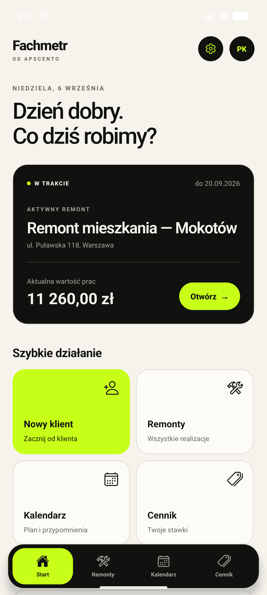
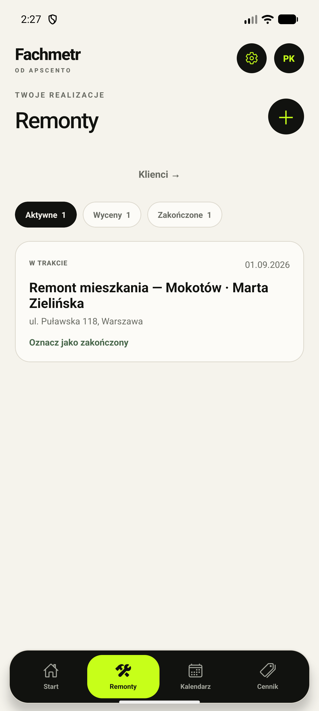
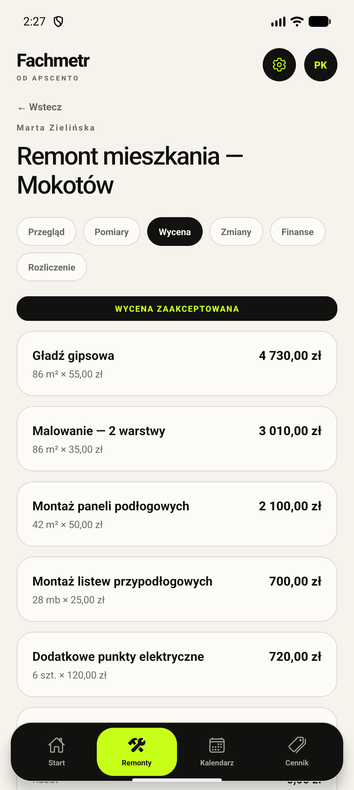
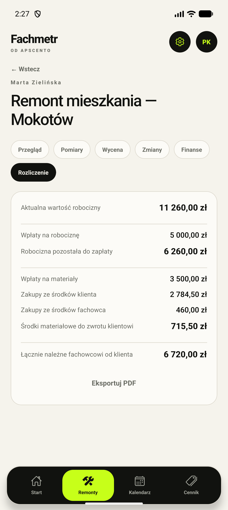
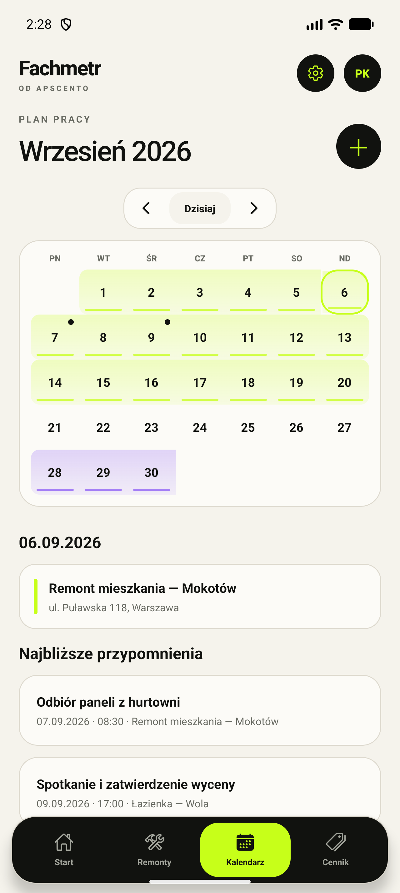
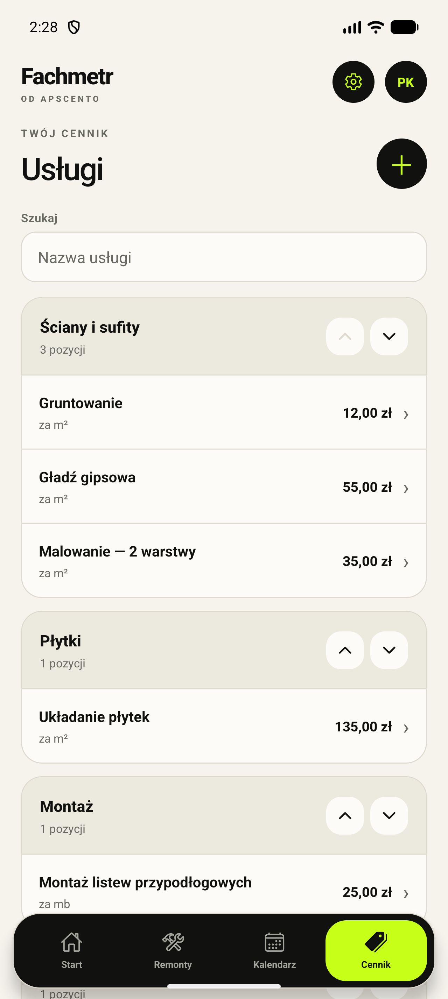

Pomiary i wyceny
Pozycje, ilości i ceny zebrane w czytelną wycenę dla konkretnego klienta.
Fachmetr to aplikacja dla fachowców, którzy chcą mieć wycenę, zakres prac, materiały, terminy i rozliczenie w jednym miejscu.

01
Dla kogo
Jednoosobowe firmy i małe ekipy często prowadzą remont w notesie, komunikatorze i kilku arkuszach naraz. Fachmetr łączy te informacje w prostą historię zlecenia — od klienta do końcowego rozliczenia.
Co porządkuje
Od pierwszych oględzin aż po końcowe rozliczenie — bez przełączania się między notesem, kalkulatorem i wiadomościami.
Pozycje, ilości i ceny zebrane w czytelną wycenę dla konkretnego klienta.
Zaakceptowana baza prac i późniejsze zmiany widoczne osobno, bez gubienia ustaleń.
Wpłaty klienta, wydatki materiałowe i należna kwota w jednym podsumowaniu.
Kalendarz realizacji pomaga pamiętać o etapach prac, płatnościach i spotkaniach.
Eksport szczegółowej lub uproszczonej wyceny oraz czytelnych podsumowań do PDF.
Dane zostają na urządzeniu, a całą bazę wraz ze zdjęciami można wyeksportować i przywrócić.
Aplikacja w praktyce
To rzeczywiste ekrany aplikacji. Nazwiska, adresy i kwoty są wyłącznie danymi demonstracyjnymi.





Wydanie
Wersja 1.0.4 jest dostępna w Google Play. Możesz zacząć bezpłatnie i odblokować pełny zestaw funkcji jednorazowym zakupem.
Stabilna wersja na Androida dostępna oficjalnie w Google Play.
Darmowa wersja obejmuje jeden aktywny remont, katalog startowy, finanse i kopię zapasową.
Jednorazowy zakup odblokowuje dowolną liczbę remontów, PDF-y, zdjęcia paragonów, własny cennik i przypomnienia.
FAQ
Tak. Aplikację można pobrać z Google Play na urządzenia z Androidem.
Przede wszystkim dla samodzielnych fachowców i małych ekip remontowych, które prowadzą kilka zleceń i chcą uporządkować ich finanse oraz zakres.
Podstawowa praca z klientami, remontami, wycenami i finansami odbywa się lokalnie i nie wymaga stałego połączenia z internetem.
Na urządzeniu użytkownika. Fachmetr nie wymaga konta ani chmury, a dane można samodzielnie wyeksportować do kopii zapasowej.
Dostępna teraz
Pobierz Fachmetr z Google Play i zacznij od pierwszego klienta.